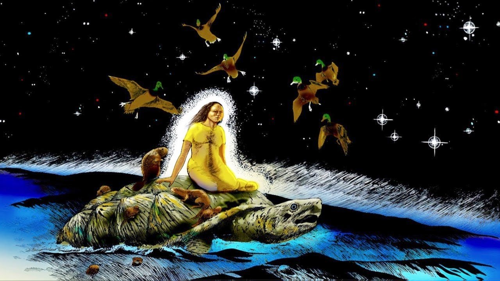

Are we really doomed?
One of the biggest shifts in my understanding of the climate crisis came from Ayana Elizabeth Johnson’s TED Talk. Before watching it, my perspective on climate change was shaped mostly by a sense of inevitability and overwhelm, where it often felt like the situation was already too far gone and that individual action wouldn’t really make a difference in the long run.
I liked the way she framed climate work as something ongoing and collective, where there’s no single solution. It also shifted the way I think about my own participation (Venn Diagram), since it suggests that involvement can look different depending on context and abilities.

Skywoman
Our class discussion about Robin Wall Kimmerer's essay "Skywoman Falling" completely changed how I view the relationship between humans, animals, and nature. It also forced me to contrast this perspective with the story of Eve that I grew up hearing.